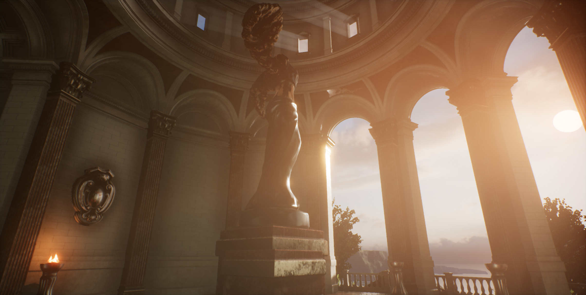

Real-time Simple Managed Global Illumination

{kind=link}
Real-time Direct & Indirect (Shadows, Ambient Occlusion and Penumbras)
Artist Defined Light (Color Bounces, Light Sources and Light Zones)
Inverted way to common Global Illumination techiniques
Primary & Secondary Screen Space Ambient Occlusion
Directional Light and Point & Spot Lights
Light Portals
Light Zone Volumes
Introduction
This concept is based in the well know Global illumination techniques with the main difference of this techinique only calculates in realtime the shadows and light occlusion aswell the penumbras in the world. The light color bleeding should be added by the artist in the final step. The main objective is end with the planar light in the game engines with a low cost Global illumination solution.
Components
• Directional Light (Direct Sun Light): Should project a high intensity color to simulate the sun, doing a real sun study we can notice the sun is more intense at morning and middle day, note that at do the work.
• Spot & Point Lights (Indirect Light Color Bounces): We need add a "Bool" option to all the lights, this Bool will be used later to define if the light sources will affect the generated Ambient Occlusion map or not.
• Light Portals (Light Leak Reference + Light Rays Source + Outdoor Occlusion): This ones are used to define over the world the light leak points, for example if you make a house with windows, you place one "Light Portal" per window. The "Light Portals" should be editable in scale aswell rotation and location,
the "Light Portals" have a secondary function too, they should have a "Bool" option to cast volumetric light rays based in their shape aswell their sub settings to configure it per "Light Portal". All the "Light Portals" in the world read the "Directional Light" direction/rotation directly or with a manager.
Concept
The sun light is defined with the Directional Light, this projects only direct light to the world. Each Light Portal in the world read the sun rotation and calculates per instance the intensity of the sun in the zone, after that render the outdoor occluder, this one don't have any effect over the world other than give the user the effect of darker zones in the indoors (is not visible from indoor to outdoor or close distances), this actor calculates too per instance the percentage of sun rays and render it using as reference the bool. Depending of the percentage of light in each portal it contributes to the scene light (with an actual light or removing shadow zones from the AO map).
The light volume zones cover indoors and chan change the player parameters in the vision of the zone (intensity, color range...). Then the point lights or spot lights can give light in the zones where was placed over the map to simulate GI color bounces, aswell the light portals can spawn it as before we wrote if are needed.
All this logic can be managed with a time of day system, divide the system in 4 or 6 ranges, and setup per range into an array the color, intensity and rotation of the indirect light bounces. Each range in the time of day is used using as reference the hour of the day, aswell the sun have too configuration following this guide.
In the last steps of the guide is needed to make a new total engine funtion to calculate the light, you can choose the simple way or advanced way, the difference between is the first one don't need edit the engine at all.
Simple
If you don't want or just don't know how make the new shaders and manage the whole system far of the described part before, you can choose this way, but the results will be limited.
You need to create a secondary Directional Light, this one need a new engine function to don't cast shadows, this directional light is projected in the inverted way of the sun, need to be updated each time the main sun moves.
You will need to manage the indoors light intensity too and probably you can make use of negative lights too for dark zones.
Note: The materials in the engine can be used to inject planar light colors with shapes, but this will overload overall the materials.
Advanced
At this point we need a actor that manages the before parameters, plus a new actor that acts like Global Illumination light manager, this will cast the indirect light to the whole map and will generate our "Ambient Occlusion" system.
This is the core idea of the whole system a shader should cover the whole world reading the sun direction and allowing to set a base color for ambient color and intensity aswell the minimal and maximum intensity of the light only in white to black mask, the portal lights can affect the scale in the indoors.
The shader should read this actor aswell the directional light of the sun and pointlights/spotlights and check the prior created bool to affect this channel or not.
The shader have to calculate the penumbras in dark zones non directly affected by sun or close to it aswell in the indoors. This shader can do a simulation of the sunlight rotation in 4 directions (Up,Down,Right,Left) of the original location, to detect close faces to the light where the light keep intense.
This article aswell the images are under the license Creative Commons Attribution-ShareAlike 4.0 International License (CC BY-SA 4.0) made by Hevedy. Feel free to use this concept while you give credit to the original author Hevedy.